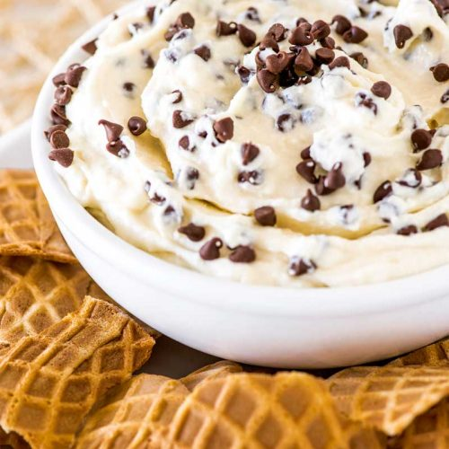

Home
Cannoli Dip

Description
Jen discovered this recipe from a co-worker and it has become a family favorite.
Laced with chocolate chips and served with broken waffle cones, this cannoli dip is guaranteed to be a party favorite!
Ingredients
- 1 cup ricotta
- 8 ounces cream cheese, softened
- 1 cup powdered sugar
- 1 teaspoon vanilla extract
- 2/3 cup mini chocolate chips
- waffle cones, broken into dippable pieces
Steps
- Using a stand mixer (or a hand mixer + large bowl), beat ricotta, cream cheese, and powdered sugar on medium-high speed until smooth, about 3-5 minutes. Add in vanilla extract and whip for another 30 seconds.
- Taste test the dip, if you would like it sweeter, add more powdered sugar, about 2 tablespoons at a time. You can safely add up to another ½ cup of powdered sugar (8 tablespoons) without negatively impacting consistency.
- Fold in mini chocolate chips, reserving some to sprinkle on top for decoration, if desired.
- Serve dip immediately with broken waffle cones for dipping.